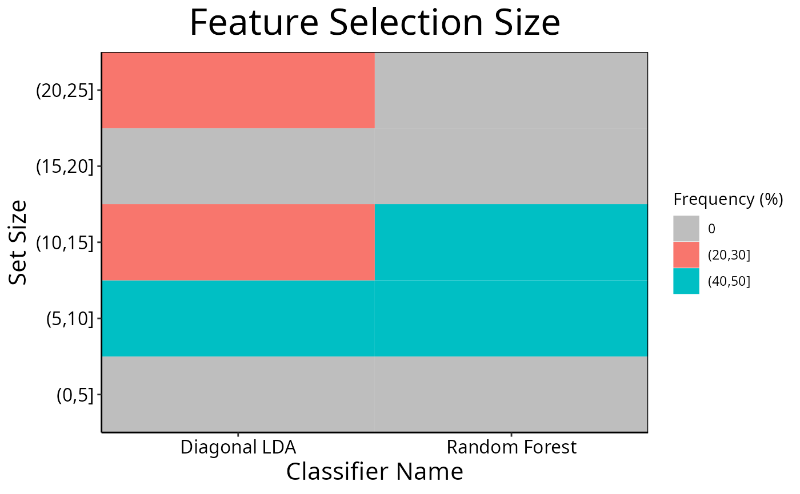

Plot Pair-wise Overlap, Variable Importance or Selection Size Distribution of Selected Features
selectionPlot.RdPair-wise overlaps can be done for two types of analyses. Firstly, each cross-validation iteration can be considered within a single classification. This explores the feature selection stability. Secondly, the overlap may be considered between different classification results. This approach compares the feature selection commonality between different selection methods. Two types of commonality are possible to analyse. One summary is the average pair-wise overlap between all levels of the comparison factor and the other summary is the pair-wise overlap of each level of the comparison factor that is not the reference level against the reference level. The overlaps are converted to percentages and plotted as lineplots.
Usage
# S4 method for ClassifyResult
selectionPlot(results, ...)
# S4 method for list
selectionPlot(
results,
comparison = "within",
referenceLevel = NULL,
characteristicsList = list(x = "auto"),
coloursList = list(),
orderingList = list(),
binsList = list(),
yMax = 100,
fontSizes = c(24, 16, 12, 16),
title = if (comparison == "within") "Feature Selection Stability" else if (comparison
== "size") "Feature Selection Size" else if (comparison == "importance")
"Variable Importance" else "Feature Selection Commonality",
yLabel = if (is.null(referenceLevel) && !comparison %in% c("size", "importance"))
"Common Features (%)" else if (comparison == "size") "Set Size" else if (comparison
== "importance") tail(names(results[[1]]@importance), 1) else
paste("Common Features with", referenceLevel, "(%)"),
margin = grid::unit(c(1, 1, 1, 1), "lines"),
rotate90 = FALSE,
showLegend = TRUE,
plot = TRUE,
parallelParams = bpparam()
)Arguments
- results
A list of
ClassifyResultobjects.- ...
Not used by end user.
- comparison
Default: within. The aspect of the experimental design to compare. Can be any characteristic that all results share or either one of the special values
"within"to compare between all pairwise iterations of cross-validation. or"size", to draw a bar chart of the frequency of selected set sizes, or"importance"to plot the variable importance scores of selected variables."importance"only usable ifdoImportancewasTRUEduring cross-validation.- referenceLevel
The level of the comparison factor to use as the reference to compare each non-reference level to. If
NULL, then each level has the average pairwise overlap calculated to all other levels.- characteristicsList
A named list of characteristics. Each element's name must be one of
"x","row","column","fillColour", or"lineColour". The value of each element must be a characteristic name, as stored in the"characteristic"column of the results' characteristics table. Only"x"is mandatory. It is"auto"by default, which will identify a characteristic that has a unique value for each element ofresults.- coloursList
A named list of plot aspects and colours for the aspects. No elements are mandatory. If specified, each list element's name must be either
"fillColours"or"lineColours". If a characteristic is associated to fill or line bycharacteristicsListbut this list is empty, a palette of colours will be automaticaly chosen.- orderingList
An optional named list. Any of the variables specified to
characteristicsListcan be the name of an element of this list and the value of the element is the order in which the factors should be presented in, in case alphabetical sorting is undesirable.- binsList
Used only if
comparisonis"size". A list with elements named"setSizes"and"frequencies"Both elements are mandatory."setSizes"specifies the bin boundaries for bins of interest of feature selection sizes (e.g. 0, 10, 20, 30)."frequencies"specifies the bin boundaries for the relative frequency percentages to plot (e.g. 0, 20, 40, 60, 80, 100).- yMax
Used only if
comparisonis not"size". The maximum value of the percentage overlap to plot.- fontSizes
A vector of length 4. The first number is the size of the title. The second number is the size of the axes titles. The third number is the size of the axes values. The fourth number is the font size of the titles of grouped plots, if any are produced. In other words, when
rowVariableorcolumnVariableare notNULL.- title
An overall title for the plot. By default, specifies whether stability or commonality is shown.
- yLabel
Label to be used for the y-axis of overlap percentages. By default, specifies whether stability or commonality is shown.
- margin
The margin to have around the plot.
- rotate90
Logical. If
TRUE, the boxplot is horizontal.- showLegend
If
TRUE, a legend is plotted next to the plot. If FALSE, it is hidden.- plot
Logical. If
TRUE, a plot is produced on the current graphics device.- parallelParams
An object of class
MulticoreParamorSnowParam.
Details
Additionally, a heatmap of selection size frequencies can be made by specifying size as the comparison to make.
Lastly, a plot showing the distribution of performance metric changes when features are excluded from training can be made if variable importance calculation was turned on during cross-validation.
If comparison is "within", then the feature selection overlaps
are compared within a particular analysis. The result will inform how stable
the selections are between different iterations of cross-validation for a
particular analysis. Otherwise, the comparison is between different
cross-validation runs, and this gives an indication about how common are the
features being selected by different classifications.
Calculating all pair-wise set overlaps can be time-consuming. This stage can
be done on multiple CPUs by providing the relevant options to
parallelParams. The percentage is calculated as the intersection of
two sets of features divided by the union of the sets, multiplied by 100.
For the feature selection size mode, binsList is used to create bins
which include the lowest value for the first bin, and the highest value for
the last bin using cut.
Examples
predicted <- DataFrame(sample = sample(10, 100, replace = TRUE),
class = rep(c("Healthy", "Cancer"), each = 50))
actual <- factor(rep(c("Healthy", "Cancer"), each = 5))
allFeatures <- sapply(1:100, function(index) paste(sample(LETTERS, 3), collapse = ''))
rankList <- list(allFeatures[1:100], allFeatures[c(5:1, 6:100)],
allFeatures[c(1:9, 11, 10, 12:100)], allFeatures[c(1:50, 60:51, 61:100)])
result1 <- ClassifyResult(DataFrame(characteristic = c("Data Set", "Selection Name", "Classifier Name",
"Cross-validations"),
value = c("Melanoma", "t-test", "Random Forest", "2 Permutations, 2 Folds")),
LETTERS[1:10], allFeatures, rankList,
list(rankList[[1]][1:15], rankList[[2]][1:15],
rankList[[3]][1:10], rankList[[4]][1:10]),
list(function(oracle){}), NULL,
predicted, actual)
predicted[, "class"] <- sample(predicted[, "class"])
rankList <- list(allFeatures[1:100], allFeatures[c(sample(20), 21:100)],
allFeatures[c(1:9, 11, 10, 12:100)], allFeatures[c(1:50, 60:51, 61:100)])
result2 <- ClassifyResult(DataFrame(characteristic = c("Data Set", "Selection Name", "Classifier Name",
"Cross-validation"),
value = c("Melanoma", "t-test", "Diagonal LDA", "2 Permutations, 2 Folds")),
LETTERS[1:10], allFeatures, rankList,
list(rankList[[1]][1:15], rankList[[2]][1:25],
rankList[[3]][1:10], rankList[[4]][1:10]),
list(function(oracle){}), NULL,
predicted, actual)
cList <- list(x = "Classifier Name", fillColour = "Classifier Name")
selectionPlot(list(result1, result2), characteristicsList = cList)

cList <- list(x = "Classifier Name", fillColour = "size")
selectionPlot(list(result1, result2), comparison = "size",
characteristicsList = cList,
binsList = list(frequencies = seq(0, 100, 10), setSizes = seq(0, 25, 5))
)